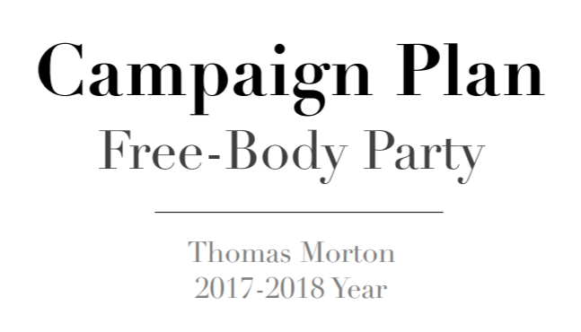
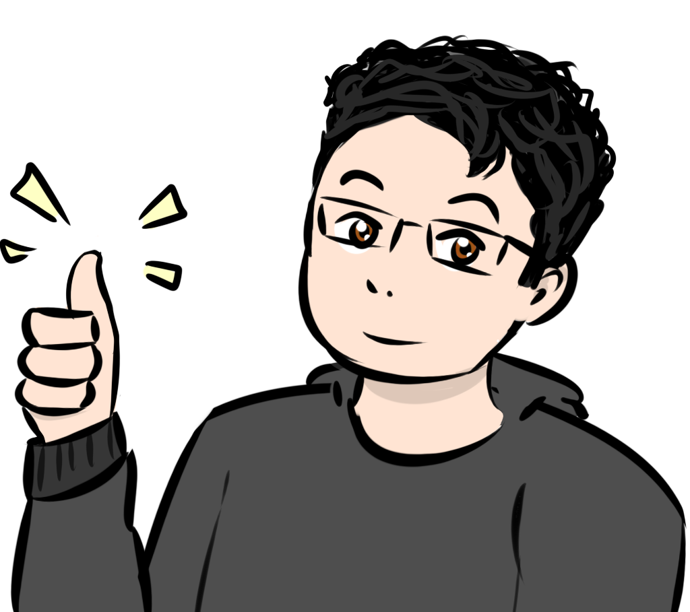
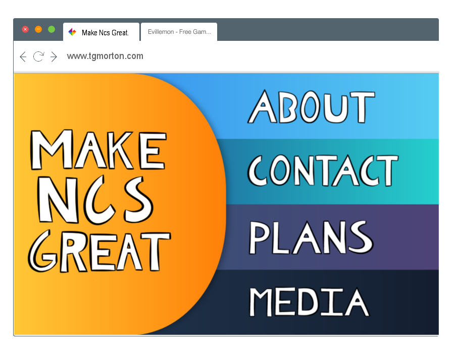

When Thomas Ran for President
Near the end of my junior year, most of my time was spent preparing for the Student-Body Presidency. I had taken it upon myself to organize a movement to improve my school, Northlake Christian. I had no real conflict with the administration, but I also knew that there are things that needed to be done if the school were to be better.
It was quite an endeavor, preparing for the campaign, and I had spent most of it writing my manifesto, titled the "Free-Body Party." It was a 3000-word rambling essay on my problems with the school and how I would fix them. I scrapped most of it, but the ideas I presented there became a basis for the entire campaign.
The Free-Body doctrine is an attempt to treat student representation as merely a pipeline and voice for the students. If the status quo is persisted then representation would continue to be for one to advance themselves, rather than the school as a whole. The student body is not to be fooled, they understand the influence of change and communication. The Introduction of the Free-Body Plan
It then became a collaborative affair. I knew that this would be impossible without the help of the students around me. Of course, the entire campaign was centralized around creating a voice for those who had none. I based many of the ideas in the campaign on Open Source Software philosophies. For instance, an extreme focus on the open nature of representation and the communication required, but also the trust that creates.
I worked with the people around me to develop plans and campaign promises. Attempting to create a better school environment for everyone. This would be done by treating the representation like a conduit or lobbyist through which student ideas are funneled.
We want to utilize every method we can to create a clear, concise, and collaborative year. A vote for Thomas means no more doubt, and no more confusion on what your representatives are doing. You will know our every goal, our every move, and this will be coordinated with our other plans: transparency, idea equality, and resource management. Excerpt from the Campaign Website
I got together with a fellow student and artist, and we created both posters and a website for the campaign. Over the course of a weekend, I built my first site, and she helped me develop my public image of the movement. The posters have a cartoonish style, with an avatar representing me, and the catchline. We had decided to "Make NCS Great," a play on the recent presidential campaign, for better or worse.
We had developed the website to look best on IPads, considering the majority of the student body would be viewing the campaign website from their School devices during the day. The large navigation buttons and tagline were meant to be seen from a distance so other students would notice the website on each other's devices. This worked quite well, with nearly the entire student body having seen the site by the end of the week.
